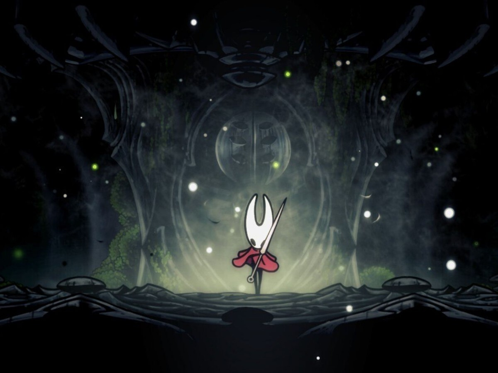

Hollow Knight:Silksong es un videojuego de accion y de aventura creado por team cherry, es el segundo juego de la secuela de Hollow Knight, Silksong se hizo muy popular por su gran jugabilidad ya que a nosotros como jugadores nos permite movernos por todo el mapa y poder explolarla asi como su gran dificultad de juego tuvo una gran demanda y fue nominado en los premios GOTY de este año.
En Silksong controlamos a Hornet, una princesa y protectora que
debe explorar un nuevo reino lleno de enemigos, misterios y desafíos
usando sus habilidades para derrotar bichos.
La jugabilidad de Silksong es demasiado buena es un juego en 2d y tiene muchos movimientos que podemos ir desbloqueando al avanzar el juego, tambien al tener objetivos y mejoras de arma mejora la jugabilidad del video juego. 